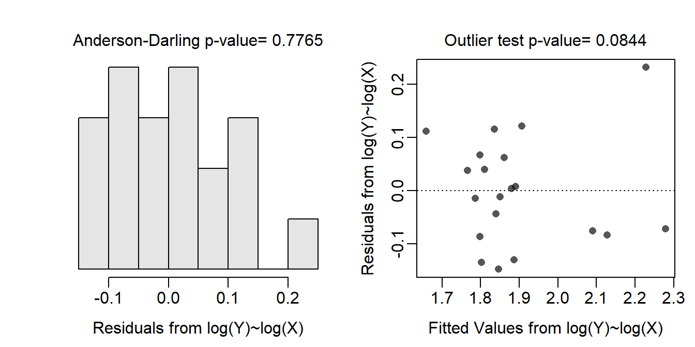
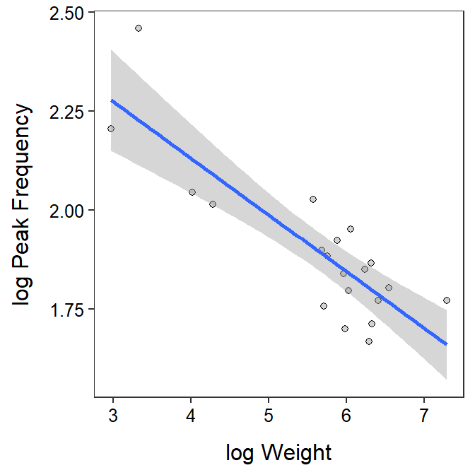
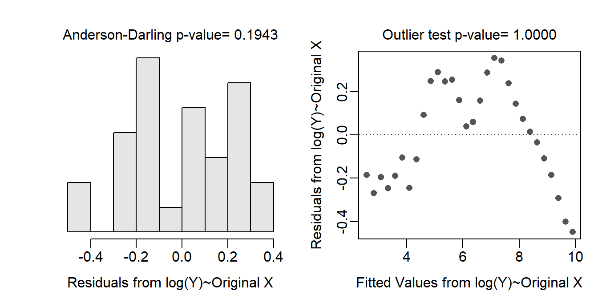
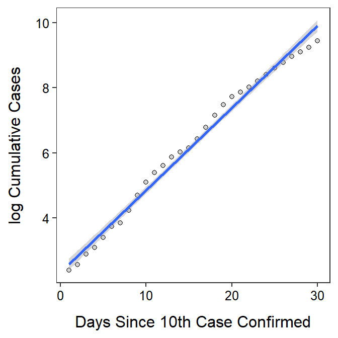

rs <- read.csv("https://raw.githubusercontent.com/droglenc/NCData/master/Rattlesnakes.csv")
lm.rs <- lm(freq~weight,data=rs)
assumptionCheck(lm.rs,lambday=0,lambdax=0)
rs$logfreq <- log(rs$freq)
rs$logweight <- log(rs$weight)
lm.rst <- lm(logfreq~logweight,data=rs)
anova(lm.rst)Analysis of Variance Table
Response: logfreq
Df Sum Sq Mean Sq F value Pr(>F)
logweight 1 0.48058 0.48058 45.628 2.494e-06
Residuals 18 0.18959 0.01053 ggplot(data=rs,mapping=aes(x=logweight,y=logfreq)) +
geom_point(pch=21,color="black",fill="lightgray") +
labs(x="log Weight",y="log Peak Frequency") +
theme_NCStats() +
geom_smooth(method="lm")`geom_smooth()` using formula 'y ~ x'
( cfs.rst <- cbind(Est=coef(lm.rst),confint(lm.rst)) ) ## log-log scale Est 2.5 % 97.5 %
(Intercept) 2.7039338 2.4483788 2.95948871
logweight -0.1433303 -0.1879095 -0.09875109exp(cfs.rst) ## back-transformed to original scale Est 2.5 % 97.5 %
(Intercept) 14.9383805 11.5695754 19.2881074
logweight 0.8664678 0.8286897 0.9059682nd <- data.frame(logweight=log(454))
( plog454 <- predict(lm.rst,newdata=nd,interval="prediction") ) # log scale fit lwr upr
1 1.827025 1.605015 2.049035exp(plog454) ## back-transformed to original scale fit lwr upr
1 6.21537 4.977936 7.760409( clog454 <- predict(lm.rst,newdata=nd,interval="confidence") ) # log scale fit lwr upr
1 1.827025 1.774123 1.879927exp(clog454) ## back-transformed to original scale fit lwr upr
1 6.21537 5.895112 6.553026
cv <- read.csv("https://derekogle.com/NCMTH207/modules/ce/data/CovidUK.csv")
lm.cv <- lm(Cum_Cases~Days_Since_10,data=cv)
assumptionCheck(lm.cv,lambday=0)
cv$logCum_Cases <- log(cv$Cum_Cases)ggplot(data=cv,mapping=aes(x=Days_Since_10,y=logCum_Cases)) +
geom_point(pch=21,color="black",fill="lightgray") +
labs(x="Days Since 10th Case Confirmed",y="log Cumulative Cases") +
theme_NCStats() +
geom_smooth(method="lm")`geom_smooth()` using formula 'y ~ x'
( cfs.cvt <- cbind(Est=coef(lm.rst),confint(lm.rst)) ) ## log-log scale Est 2.5 % 97.5 %
(Intercept) 2.7039338 2.4483788 2.95948871
logweight -0.1433303 -0.1879095 -0.09875109exp(cfs.cvt) ## back-transformed to original scale Est 2.5 % 97.5 %
(Intercept) 14.9383805 11.5695754 19.2881074
logweight 0.8664678 0.8286897 0.9059682nd <- data.frame(Days_Since_10=c(20,40))
( plogCC <- predict(lm.cvt,newdata=nd,interval="prediction") ) # log scale fit lwr upr
1 7.372669 6.877567 7.867771
2 12.415864 11.862859 12.968869exp(plogCC) ## back-transformed to original scale fit lwr upr
1 1591.877 970.2629 2611.738
2 246684.104 141897.2962 428852.762